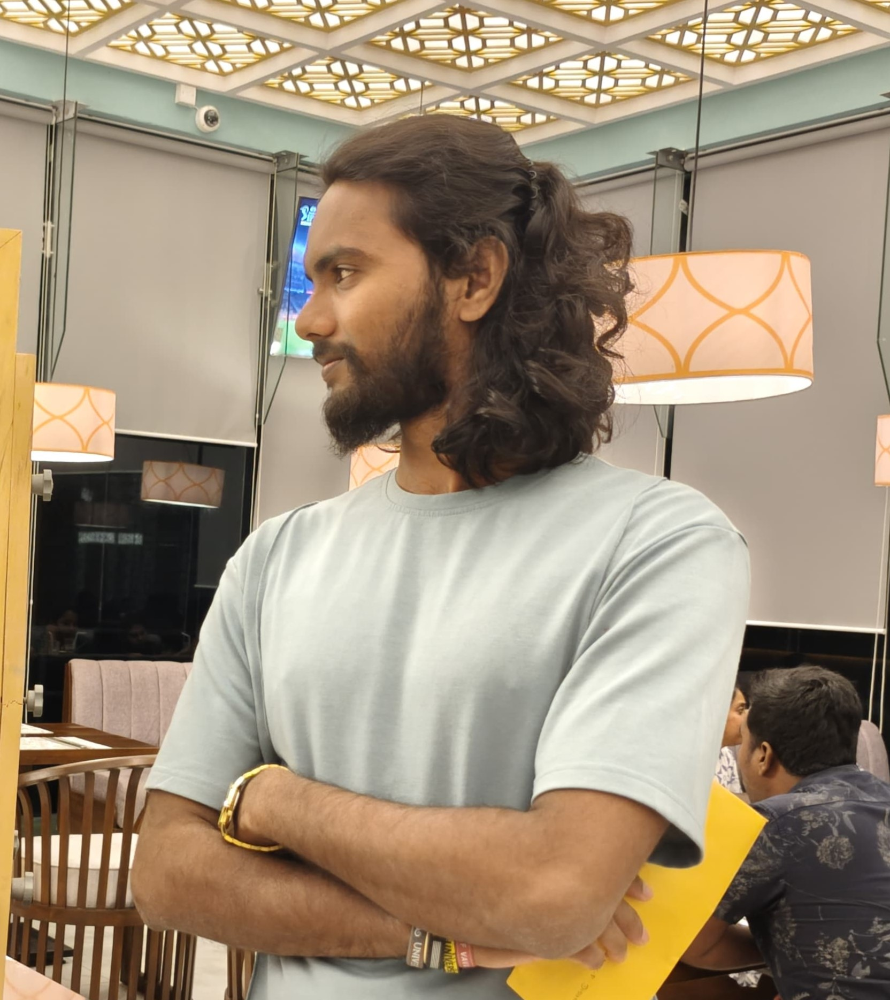

Sales & Marketing Officer
Best Pacific Textiles Lanka (Pvt) LtdB2B customer relationships, sales inquiries, quotations and order coordination. Work with internal teams to align customer requirements, production timelines and order execution.
PROJECT MANAGEMENT PORTFOLIO
Project Coordinator | Project Management Graduate
A Project Management graduate with practical experience supporting IT project delivery, coordinating stakeholders, leading event operations and working across business functions.
Explore projects ↗ Get in touch● Based in Sri Lanka · Open to suitable opportunities

KP.Add your photo as assets/profile.jpeg01 / ABOUT
I bring together structured project management knowledge and practical experience gained in technology, event management and corporate environments.
During my six-month internship at Navitsa Technologies, I supported eight software and technology projects through requirements coordination, documentation, Agile activities, progress tracking and delivery coordination.
Outside IT, I led coordination for RAVO FEST, a four-day carnival involving a 23-member team and seven investors. My role at Best Pacific Textiles Lanka strengthens my B2B customer management and commercial coordination experience.
02 / EXPERIENCE
B2B customer relationships, sales inquiries, quotations and order coordination. Work with internal teams to align customer requirements, production timelines and order execution.
Led planning, budgeting and event coordination for a 23-member team and seven investors. Managed vendors, permissions, procurement, marketing, operations, risks and financial tracking.
Supported eight software and technology projects through requirements gathering, documentation, sprint planning, stand-ups, client coordination, progress tracking, implementation planning and testing/deployment coordination.
03 / SELECTED WORK
Eight software and technology projects in local and international environments.
View case study ↗Four-day event planning, team leadership, stakeholder and operational coordination.
View case study ↗Batch representation and University Beach Volleyball Team Captaincy.
View case study ↗Customer management, commercial coordination and manufacturing exposure.
View experience ↗04 / CAPABILITIES
Planning, scheduling, monitoring, risk management and reporting.
Agile, Waterfall, SDLC, requirements and sprint activities.
Client coordination, stakeholder engagement and team leadership.
Microsoft Project, JIRA, Excel, Microsoft Office and AI tools.
B2B coordination, quotations, order coordination and procurement exposure.
Teamwork, communication, adaptability and problem solving.
05 / EDUCATION
Vavuniya Campus, University of Jaffna · 2022–2026
Additional qualification
06 / CONTACT
Interested in project coordination opportunities, collaboration or exchanging ideas? I'd be glad to connect.